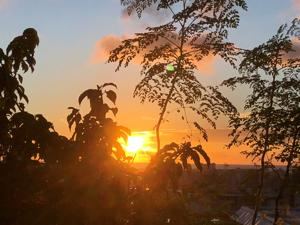
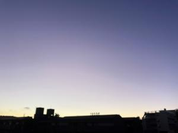
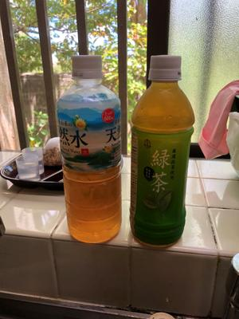

うるがいの話 ある日
最新: 令和４年の慰霊の日【うるがいの話 ある日】とは 一日だけのプログです
『うるがいの話』の最新一日だけのプログで、通信料が少なく経済的だ。カニの画像をクリックすると全ての日付が載る『うるがいの話』サイトを表示します
|
|
【うるがいの話】 うるがい(ｳﾙｶﾞｲ urugai)とは、『もずくがに』の名前でとても大きくなります。 |
|---|---|
|
|
【カミマヤーの話】 猫のことを方言でマヤーといいます。カミマヤー（kamimayaa）とは、神の猫のことです。 |
|
【たながぁの音楽】 たながぁ（ﾀﾅｶﾞｰ tanagaa）とは手長えびのことで、何種類かあり大きいのは車 エビぐらいになります。 |

|
【ぶながぁの話】 ぶながぁ(ﾌﾞﾅｶﾞｰ bunagaa)とは、赤い髪の毛、赤い身体、そして身長は１ｍ２０ｃｍ ぐらい、川の蟹を食べているの目撃された。場所は沖縄県国頭郡大宜味村のと ある村僕の隣近所に住んでいる爺さんから、聞いた話です。 |
|
|
【ギーマの話】 ギーマ(giima)とは、山原の里山に咲くスズランに似た、 花を付けます。実は食べられます、 気が付くと口の周りが紫になっています。 |
2022年06月23日 (木）令和４年の慰霊の日
15:37
  
ウクライナで戦争が起きている今の慰霊の日である。昨日いった床屋で、テレ
ビで残酷な番組を放送していたが、これより今のウクライナは桁違いの残酷な
事が起きている。プーチンはヒトラーと変わらないと意見が一致した。
午前中に玉那覇ガラスに支払いに行く、お店にはオジーさんが対応してくれた
領収書をもらっているときに、『もう少し看板は目立つようにしたほうがいい
のでは、これでは分からないよ』とは言えず、『素敵に看板ですね』と褒めて
しまった。支払いを終え店から出て、道端に止めてあった車に乗ろうとしたら
車が途切れず、なかなか車に乗れない。すると店から出て来たオジーさんがチ
ョット！と何かいう。うーん？、としばらく待っているとペットボートルを二
つ持って来てくれて私に上げる。えー、ありがとうございますと頂く。素敵で
すネが効いたのか・・・、確かに看板は目立ないが素敵だった。
１５時３３分 ビットコインの総資産 ￥８、０７７↑